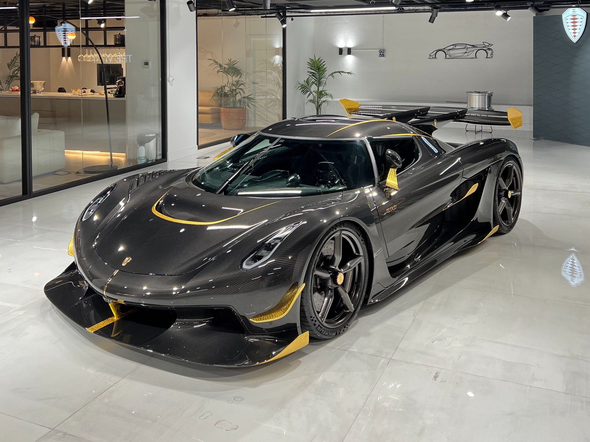

Koenigsegg Automotive AB is a Swedish manufacturer of high-performance sports cars based in Ängelholm, Skåne County, Sweden.
Koenigsegg cars have on several occasions broken various production car speed records.
The company was founded in 1994 in Sweden by Christian von Koenigsegg, with the intention of producing a "world-class" sports car. Many years of development and testing led to the CC8S, the company's first street-legal production car, which was introduced in 2002.
In 2006, Koenigsegg began production of the CCX, which uses an engine created in-house specifically for the car. The goal was to develop a car homologated for use worldwide, particularly the United States, whose strict regulations did not allow the import of earlier Koenigsegg models.
In March 2009, the CCXR was listed by Forbes as one of "the world's most beautiful cars".
